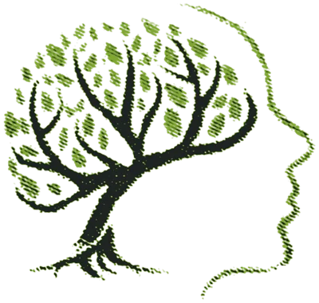
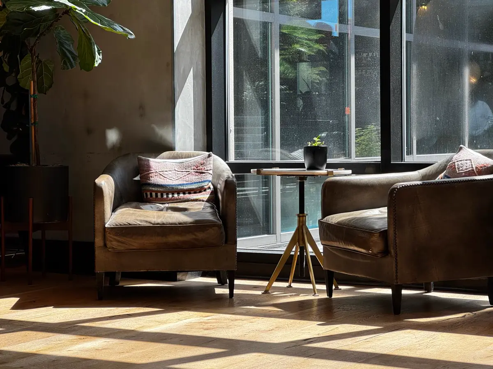
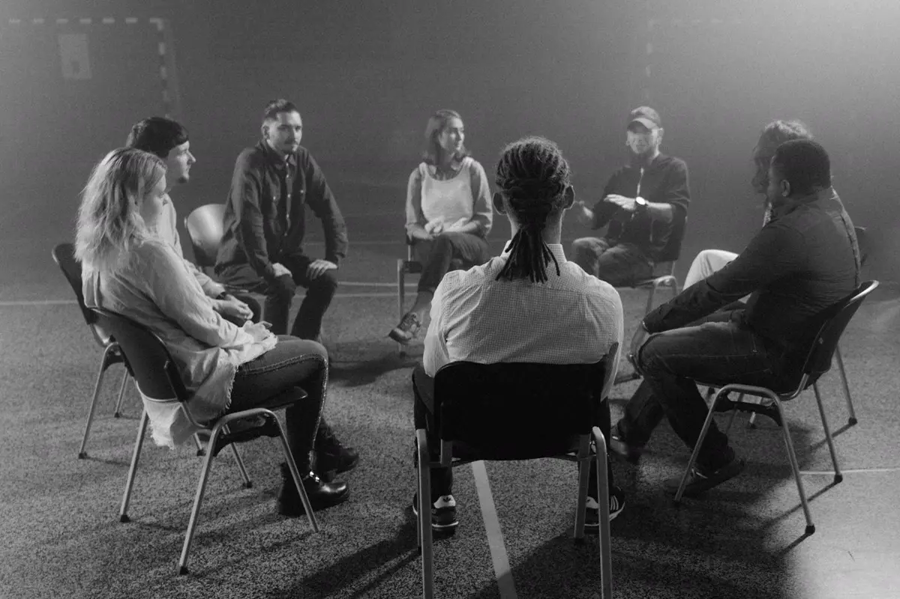
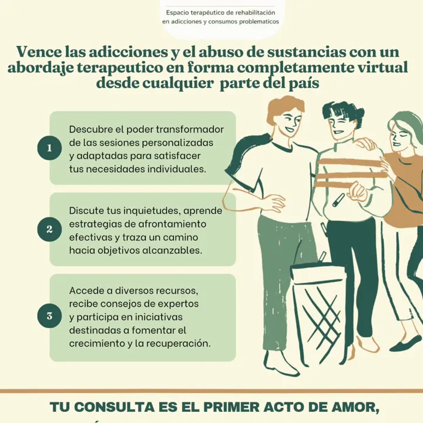
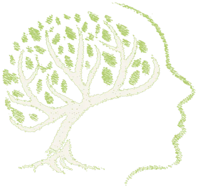

Personas
Un espacio propio para hablar de lo que pasa, poner en palabras lo que pesa y pensar el paso siguiente.

Crisis acompañamiento terapéuticoEspacio de encuentro terapéutico · Traslasierra, Córdoba
Asistencia y acompañamiento terapéutico integral para personas, familias y grupos: crisis, eventos traumáticos, vínculos, consumos problemáticos y adicciones. Presencial en Traslasierra y online desde todo el país.
Raíz
Terapia de crisis y acompañamiento terapéutico integral. Cada situación es distinta: lo primero es escuchar qué está pasando y con quién.
Momentos en los que lo que sostenía la vida deja de alcanzar: pérdidas, cambios grandes, preguntas que no encuentran respuesta. Un espacio para ordenar, sin apuro.
Después de algo que irrumpió de golpe —un accidente, una pérdida repentina, una situación de violencia—, acompañar a recuperar algo de piso, al ritmo de cada persona.
Pareja, familia, convivencia, vínculos que lastiman o que se cortaron. Se puede trabajar con una persona, con la familia o con el grupo.
Un espacio terapéutico de rehabilitación en adicciones y consumos problemáticos, para quien consume y para quienes lo rodean. Sin juicio y con tiempos posibles.
Cuando el proceso ya empezó, sostenerlo también es trabajo. Acompañamiento en el tiempo para personas, familias y grupos.
“Porque somos seres esencialmente sociales nos desarrollamos en grupos: familia, comunidad, cultura. Necesitamos un proyecto de vida que nos sostenga en la salud, equilibrio emocional, físico y mental.”
Un espacio propio para hablar de lo que pasa, poner en palabras lo que pesa y pensar el paso siguiente.

Cuando lo que le pasa a uno atraviesa a todos. También para quien acompaña a alguien y ya no sabe cómo seguir.

Talleres grupales y encuentros reflexivos: pensar con otros lo que solos cuesta más.
Primer contacto
Elegí lo que te represente. Con eso armamos un mensaje breve y ordenado para Gabriela; lo demás lo hablan en el encuentro.
Salud mental
La salud mental no es estar bien todo el tiempo: es tener dónde apoyarse cuando algo se desordena. No hace falta esperar a estar “muy mal” para consultar.
No son un diagnóstico. Son motivos válidos para pedir una charla.
Si ahora mismo hay mucha angustia, probá esto mientras tanto. No reemplaza una consulta.
Seis respiraciones: tomá aire en 4, soltalo en 6.

Estas líneas públicas atienden ya, en todo el país. Datos verificados el 01/11/2026.
Dónde y cómo
Encuentros presenciales en el Valle de Traslasierra, Córdoba. La dirección te la pasamos al coordinar.
Abordaje terapéutico por videollamada, desde cualquier parte de la Argentina.
Talleres grupales y encuentros reflexivos. Preguntá por las próximas fechas.
Quién acompaña
PsicoSocial · Asistencia y acompañamiento en crisis · Socioterapeuta en consumos problemáticos y adicciones
Así se presenta Gabriela en sus redes: “Especialista en adicciones. Asistencia en conflictos vinculares. Talleres grupales / Encuentros reflexivos.” Su mirada parte de lo social: nadie atraviesa una crisis completamente solo, y el camino se piensa con la familia, la comunidad y los vínculos de cada persona.
@gabypsicosc @crisis_acompanamientoPreguntas
No. Es un espacio terapéutico con turnos. Si vos u otra persona están en riesgo ahora, llamá al 911 o a la Línea Nacional de Salud Mental 0800 999 0091 (gratuita, las 24 horas, en todo el país). Para consumos, la Línea 141 de SEDRONAR.
Sí. Además del consultorio en Traslasierra, Córdoba, hay abordaje terapéutico en forma virtual desde cualquier parte del país.
Sí. Muchas consultas empiezan por alguien que acompaña: una madre, un padre, una pareja, un amigo. También se trabaja con familias y grupos.
En el Valle de Traslasierra, Córdoba. La dirección exacta te la pasamos por WhatsApp al coordinar el primer encuentro.
Los valores, formas de pago y la cobertura se consultan por WhatsApp, según el tipo de abordaje.
Sí. Hay talleres grupales y encuentros reflexivos. Consultá por WhatsApp las próximas fechas.

Escribí sin vueltas, con lo que puedas contar. La respuesta llega por WhatsApp.
11 6415-8517